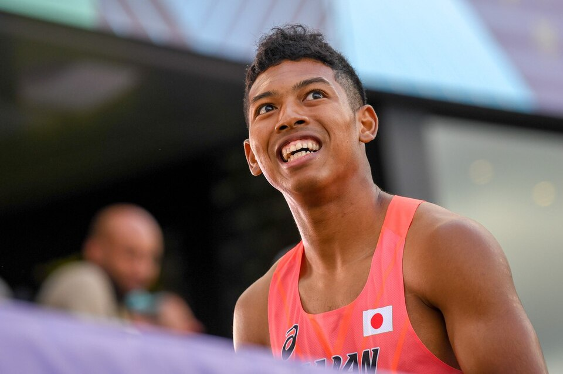

陸上競技
•
陸上 / 男子100m / 4x100mリレー
サニブラウン・アブデル・ハキーム
サニブラウン・A・ハキーム
Abdul Hakim Sani Brown
🏢 所属: 東レ
🏅 世界陸上2大会連続入賞🏅 パリ五輪100m 9秒96🏅 フロリダ大出身
圧倒的ストライドと世界最高峰のトップスピード。アジアのスプリント王座奪還へ挑む快速スプリンター
愛知・名古屋2026 今大会最終結果
準決勝突破・今夜 男子100m決勝進出🔥
準決勝タイム: 10秒02（組1着・全体1位通過）
【最新・今夜決勝】本日開幕した陸上競技。男子100m準決勝で中盤から圧倒的な伸びを見せ、10秒02をマークして組1着・全体トップで決勝進出。今夜のアジア最速決戦に挑む。
🎬 最後のシーン（決定的瞬間・ハイライト）
余裕を残しながら先頭でフィニッシュラインを駆け抜けた圧巻の準決勝ラン。
▶️ 【YouTube】男子100m準決勝 中盤からの爆発的スプリントで10秒02！決勝へ を見る
📊 公式トーナメント表・競技記録速報（Draw/Results）
男子100m ラウンド別公式リザルト・風速記録＆決勝レーン順
📊 【日本陸上競技連盟 (JAAF) / World Athletics】JAAF公式 大会リザルト速報 を見る ➔
経歴・これまでの歩み
城西大城西高校在学中の2015年世界ユース選手権で100m・200mの2冠を達成し、ウサイン・ボルトの大会記録を更新して世界的な注目を浴びる。フロリダ大学へ進学後、NCAA選手権で活躍。世界陸上オレゴン大会で7位、ブダペスト大会で6位と、日本短距離界初となる世界大会2大会連続ファイナリストの快挙を成し遂げた。
主要大会ハイライト戦績
2024年
パリオリンピック
100m準決勝 9秒96（自己ベスト）/ 4x100mR 5位
2023年
ブダペスト世界陸上
男子100m 6位入賞（10秒04）
2022年
オレゴン世界陸上
男子100m 7位入賞（日本人初）
2019年
ドーハ世界陸上
4x100mR 銅メダル（37秒43 アジア記録）
プレイスタイル＆世界を制する武器
190cmの恵まれた体躯から繰り出される豪快な大ストライドと、レース中盤から後半にかけての爆発的な伸び足が特徴。スタートからの加速が噛み合った際の最高速度は世界トップスプリンターに匹敵します。
専門家・メディアによる客観的分析・批評
✨
強み・世界トップ水準の評価
190cmの恵まれた体躯から繰り出される豪快なストライドと、中間疾走から終盤にかけてのトップスピード到達点は世界トップと互角。大舞台になるほどタイムを上げてくる本番強さは歴代日本選手随一。
出典・ソース:
朝原宣治氏（五輪メダリスト解説） / フロリダ大学陸上部
⚠️
課題・懸念される客観的事実
スタート直後の一次加速（最初の30m）でのピッチの立ち上がりが遅れがちで、リアクションタイムのばらつきや過去の下肢筋肉系トラブル（度重なる肉離れ）の再発管理が常に問われます。
出典・ソース:
Number Web / 陸上競技マガジン
愛知・名古屋2026への決意とメッセージ
大会スケジュール＆観戦のツボ
🗓️ 出場予定日程・会場
2026年9月27日 100m予選・準決勝 / 9月28日 決勝 / 10月2日 4x100mR 決勝
👀 観戦の注目ポイント
10秒の間に凝縮された究極のスピード勝負。号砲後の鋭い出足から、60m地点を超えて加速するサニブラウン選手の豪快な追い上げは圧巻です。